Inception v4 and Inception-ResNet: Complete Depth and Scaled Branches
Abstract
Combining wide Inception branches with residual addition introduces a scale choice: how large should each learned correction be relative to its identity path? We check residual values and gradients directly, preserve complete reference block counts, and show both compact models learning through explicit tensor Adam loops with paired parameter/state checkpoints.
Source example: examples/cpp/source/nn/1_convolutional_neural_networks/1.2_classic_architectures/inception_v4_resnet.cpp.
The method
Inception v4 repeats A/B/C blocks 4/7/3 times between its stem and two reductions. Inception-ResNet-v2 repeats 10/20/10, retaining the full depth even in the CPU demonstration. Its branch outputs are concatenated, projected by a biased linear 1×1 filter without BN, scaled, then added to the input. Other convolutions use beta-only BN/ReLU. The ordinary residual scales are .17, .10 and .20 for A/B/C; the final C block instead uses scale one and omits its final ReLU, following TF-Slim. Main dropout retains .8; the auxiliary head precedes the second reduction. He initialization and eager unbiased-variance moving updates are explicit library adaptations.
Without the final ReLU, a block is y=x+sF(x;theta), so
The fixture shares weights across scales zero, s and 2s. It checks exact identity at zero, linear output/parameter-gradient scaling and the identity contribution to input gradients for all three branch types. Final ReLU is disabled only for this algebraic diagnostic; normal blocks still apply it. A later gate can change which derivatives survive. These equalities explain the scale mechanism without proving stability or faster learning on arbitrary data.
Full forward checks use 299 pixels and 1000 classes, validating every named stage and the following learned/main, auxiliary and moving-state counts:
| Model | Main learned scalars | Auxiliary learned scalars | BN moving scalars |
|---|---|---|---|
| Inception v4 | 42648232 | 3358568 | 64960 |
| Inception-ResNet-v2 | 55813192 | 3366760 | 62336 |
Convolution work adds over branches and repeated blocks. Each canonical model checks forward stages and parameter gradients, including the final C-block exception and the auxiliary head.
Both compact models retain every block at one-eighth widths. Augmented CIFAR-10 batches resize to 107 pixels. Each model fits 12,000 original images for twelve epochs with batch size 128, BN momentum .9 and Adam(.001). The objective uses .1-smoothed main cross entropy, .4-weight smoothed auxiliary cross entropy and a .0001/2 kernel penalty. Unsmoothed primary NLL on 5,000 validation images selects the parameter and moving-state checkpoints for evaluation on all 10,000 official test images. The report measures native accuracy and prints the gap to the upstream 35% sanity check.
The concept diagram below is drawn by dm::graphics::Diagram. Its editable C++
source is the complete block below; regeneration uses the same datamunge toolchain
as the numerical examples. Exports consume the saved local SVG.
#include <dm/dm.hpp>
int main() {
std::filesystem::create_directories("build");
dm::graphics::Diagram diagram;
diagram.node("n0", {0.0, 0}, "Complete blocks\nv4 or residual model");
diagram.node("n1", {5.2, 0}, "Identity plus scaled branch\ncheck values and gradients");
diagram.node("n2", {10.4, 0}, "Explicit tensor Adam\nsave weights and BN state");
diagram.edge("n0", "n1").edge("n1", "n2");
diagram.save_svg("build/inception_v4_resnet_concept.svg");
}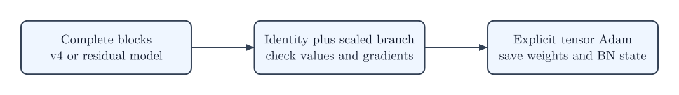
Simple residual-scale example
Compact A/B/C branches isolate the scale algebra with a common positive input and fixed inference BN state. Every evaluation reuses the same named parameters.
Executed architecture diagram
The diagram below is generated by this model's forward function through
nn::Module::plot. Each style runs a zero-valued shape probe in inference mode;
it does not fit parameters or load a trained checkpoint. Shapes include the
example batch, and learned-value counts deduplicate shared tensors. The flow and LeNet views use named composite blocks; the graph view shows
functional layers and their actual branches. ModelPlotDetail::Operations
expands both into tensor primitives.
All views run left to right with node labels rotated 90 degrees counterclockwise.
Colors identify layer categories and are explained by the legend. The settings below
control fill/edge opacity, category colors, column/lane spacing, label content, font
size and wrapping. All views label names and exact shapes; aggregate learned-value counts remain in the heading. All three views use shared linear shape scales: face axes
follow spatial dimensions, depth follows channel count, and vector height follows
feature count. Batch size is excluded from geometry. A one-pixel visibility floor
keeps very small dimensions visible; it is disclosed in each figure. The scales can
instead use SquareRoot or Logarithmic compression explicitly. LeNet sheet counts
and graph neuron markers are bounded samples; their envelopes follow the shape scales.
Graph neuron bundles are drawn only for actual dense connections. Dots mark omitted
units. Wide diagrams can be scrolled at native size on the website.
Arrows follow the executed differentiable path; constants and deliberately
detached paths are not expanded. The visual conventions are inspired by
[VisualTorch's examples](https://visualtorch.readthedocs.io/en/latest/usage_examples/index.html).
#include <dm/dm.hpp>
int main() {
namespace n = dm::nn;
n::set_num_threads(2);
std::filesystem::create_directories("build");
for (bool residual : {true, false}) {
n::ParameterStore p(17), state(17);
n::models::Inception4Config cfg;
cfg.residual = residual;
cfg.image_size = 107;
cfg.width_divisor = 8;
cfg.classes = 10;
cfg.momentum = .9;
n::Module model(
[&](const n::Tensor& image) {
const auto out = n::models::Inception4(p, state, image, cfg, false, false);
auto previous = image;
for (const auto& [name, value] : out.stages) {
n::model_stage(name, previous, value);
previous = value;
}
return out.logits;
},
residual ? "Inception-ResNet-v2 / report configuration"
: "Inception v4 / report configuration");
for (const auto style :
{n::ModelPlotStyle::Graph, n::ModelPlotStyle::LeNet, n::ModelPlotStyle::Flow}) {
n::ModelPlotOptions options;
options.style = style;
options.opacity = .8;
options.edge_opacity = .55;
options.funnel_opacity = .08;
options.colors.convolution = "#64B5CD";
options.colors.pooling = "#5ABF9A";
options.colors.dense = "#748BCB";
options.spacing.layer = 24;
options.spacing.lane = 12;
options.labels.type = n::ModelPlotLabel::NameAndShape;
options.labels.size = 13;
options.labels.wrap = 28;
options.sizing.spatial_scale = n::ModelPlotScale::Linear;
options.sizing.channel_scale = n::ModelPlotScale::Linear;
options.sizing.spatial_size = 96;
options.sizing.channel_size = 42;
options.sizing.minimum_extent = 1;
options.sizing.max_planes = 6;
options.detail = style == n::ModelPlotStyle::Graph ? n::ModelPlotDetail::Layers
: n::ModelPlotDetail::Blocks;
const auto diagram = model.plot(n::zeros({1, cfg.image_size, cfg.image_size, 3}), options);
if (diagram.parameter_count() != p.count())
return 1;
auto output = std::string("build/inception_v4_resnet_architecture_") +
(residual ? "resnet" : "v4") + ".svg";
if (style != n::ModelPlotStyle::Flow)
output.insert(output.size() - 4, style == n::ModelPlotStyle::Graph ? "_graph" : "_lenet");
diagram.save_svg(output);
const auto label = style == n::ModelPlotStyle::Graph ? "Graph / layers"
: style == n::ModelPlotStyle::LeNet ? "LeNet / blocks"
: "Flow / blocks";
std::print(
"{}: {} nodes, {} distinct learned values.\n",
label,
diagram.nodes().size(),
diagram.parameter_count());
}
}
}Graph / layers: 416 nodes, 858406 distinct learned values. LeNet / blocks: 56 nodes, 858406 distinct learned values. Flow / blocks: 56 nodes, 858406 distinct learned values. Graph / layers: 191 nodes, 647842 distinct learned values. LeNet / blocks: 27 nodes, 647842 distinct learned values. Flow / blocks: 27 nodes, 647842 distinct learned values.
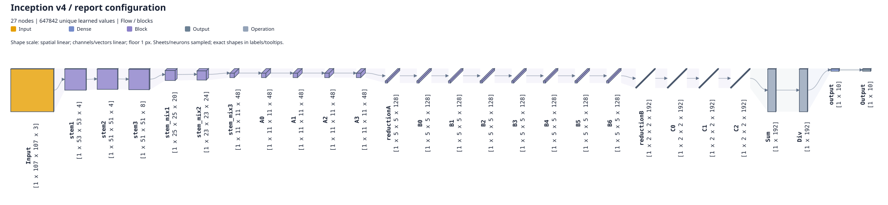
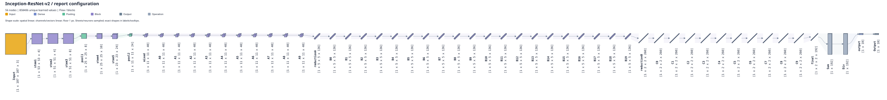
Graph and LeNet views
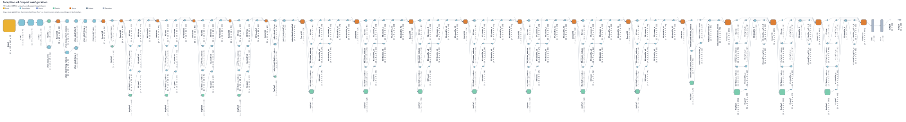
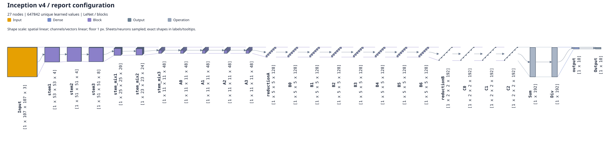
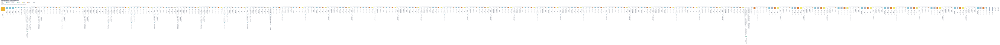
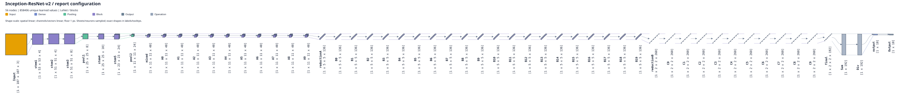
#include <dm/dm.hpp>
int main() {
namespace n = dm::nn;
const auto type = n::DType::Float64;
auto values = dm::graphics::RPlot::create(), derivatives = dm::graphics::RPlot::create();
const std::array<char, 3> kinds{'A', 'B', 'C'};
const std::array<double, 3> scales{.17, .10, .20};
const std::array<dm::graphics::RGB, 3> colours{
{{37, 99, 235}, {234, 88, 12}, {22, 163, 74}}};
for (int k = 0; k < 3; ++k) {
n::ParameterStore p(17, type), state(17, type);
n::models::Inception23Config cfg;
cfg.width_divisor = 8;
n::models::Inception23Outputs out;
n::models::InceptionBuilder b(p, state, out, cfg, false);
const auto x =
n::linspace(.1, 1, 200, type).reshape({1, 5, 5, 8}).detach().requires_grad_();
const n::models::ConvFeature feature{x, 8};
const char kind = kinds[k];
const double s = scales[k];
const auto zero = n::models::InceptionResidual(b, "r", feature, kind, 0, false).value;
const auto first = n::models::InceptionResidual(b, "r", feature, kind, s, false).value;
const auto twice = n::models::InceptionResidual(b, "r", feature, kind, 2 * s, false).value;
auto variables = p.parameters();
variables.push_back(x);
const auto a = n::grad(n::sum(first), variables), c = n::grad(n::sum(twice), variables);
double parameter_error = 0, g1 = 0, g2 = 0;
for (size_t i = 0; i + 1 < variables.size(); ++i) {
parameter_error = std::max(parameter_error, n::max(n::abs(c[i] - 2 * a[i])).item());
g1 += n::sum(n::square(a[i])).item();
g2 += n::sum(n::square(c[i])).item();
}
const double output_error = n::max(n::abs(twice - x - 2 * (first - x))).item();
const double input_error = n::max(n::abs(c.back() - 1 - 2 * (a.back() - 1))).item();
if (n::max(n::abs(zero - x)).item() != 0 ||
std::max({parameter_error, output_error, input_error}) > 1e-10 ||
p.contains("r/project/bn/beta") || !p.contains("r/project/b"))
return 1;
const std::string label = std::string(1, kind) + ", s=" + std::to_string(s).substr(0, 4);
values.lines({0, 1, 2},
{0, std::sqrt(n::sum(n::square(first - x)).item()),
std::sqrt(n::sum(n::square(twice - x)).item())},
label, colours[k]);
derivatives.lines({0, 1, 2}, {0, std::sqrt(g1), std::sqrt(g2)}, label, colours[k]);
std::print("Block {}: exact zero-scale identity; output, parameter and input-gradient "
"errors below {:.12f}; linear biased projection has no BN.\n",
kind, std::max({parameter_error, output_error, input_error}));
}
values.title("Residual signal scales with s")
.x_label("multiplier of block base scale")
.y_label("residual L2 norm")
.y_limits(0, 7);
derivatives.title("Parameter gradient scales with s")
.x_label("multiplier of block base scale")
.y_label("gradient L2 norm")
.y_limits(0, 200);
std::filesystem::create_directories("build");
dm::graphics::RLayout::create(1, 2)
.add(values)
.add(derivatives)
.size(1100, 470)
.fit_panels()
.save_svg("build/inception_v4_resnet_scaling.svg");
}Block A: exact zero-scale identity; output, parameter and input-gradient errors below 0.000000000000; linear biased projection has no BN. Block B: exact zero-scale identity; output, parameter and input-gradient errors below 0.000000000000; linear biased projection has no BN. Block C: exact zero-scale identity; output, parameter and input-gradient errors below 0.000000000000; linear biased projection has no BN.
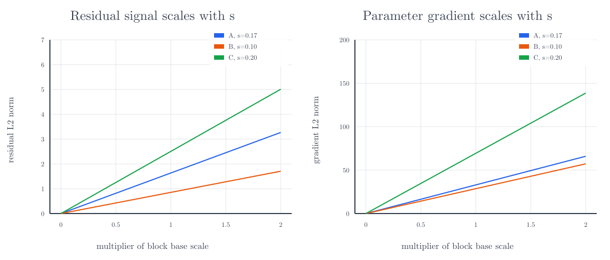
Checking full topology
Both canonical models check every learned-tensor gradient. Compact fixtures also verify that inference preserves moving statistics.
#include <dm/dm.hpp>
int main() {
namespace n = dm::nn;
n::set_num_threads(2);
for (bool residual : {false, true}) {
n::Generator fixture(23);
n::ParameterStore p(17), state(17);
n::models::Inception4Config cfg;
cfg.residual = residual;
const auto out =
n::models::Inception4(p, state, n::normal({1, 299, 299, 3}, 0., .2, fixture), cfg, false, true);
int64_t aux = 0;
for (size_t i = 0; i < p.size(); ++i)
if (p.names()[i].starts_with("aux/"))
aux += p.parameters()[i].numel();
std::vector<std::pair<int64_t, int64_t>> expected{{149, 32}, {147, 32}, {147, 64}};
if (residual) {
for (auto x : std::vector<std::pair<int64_t, int64_t>>{
{73, 64}, {73, 80}, {71, 192}, {35, 192}, {35, 320}})
expected.push_back(x);
expected.insert(expected.end(), 10, {35, 320});
expected.emplace_back(17, 1088);
expected.insert(expected.end(), 20, {17, 1088});
expected.emplace_back(8, 2080);
expected.insert(expected.end(), 10, {8, 2080});
expected.emplace_back(8, 1536);
} else {
expected.emplace_back(73, 160);
expected.emplace_back(71, 192);
expected.emplace_back(35, 384);
expected.insert(expected.end(), 4, {35, 384});
expected.emplace_back(17, 1024);
expected.insert(expected.end(), 7, {17, 1024});
expected.emplace_back(8, 1536);
expected.insert(expected.end(), 3, {8, 1536});
}
if (p.count() - aux != (residual ? 55813192 : 42648232) ||
aux != (residual ? 3366760 : 3358568) || state.count() != (residual ? 62336 : 64960) ||
out.stages.size() != expected.size())
return 1;
for (size_t i = 0; i < expected.size(); ++i)
if (out.stages[i].second.shape() !=
n::Shape{1, expected[i].first, expected[i].first, expected[i].second})
return 1;
if (out.logits.shape() != n::Shape{1, 1000} || out.auxiliary.size() != 1 ||
out.auxiliary[0].shape() != n::Shape{1, 1000})
throw std::runtime_error("Unexpected canonical classifier geometry");
const auto objective = n::mean(n::square(out.logits)) +
.4 * n::mean(n::square(out.auxiliary[0]));
const auto gradients = n::grad(objective, p.parameters());
for (std::size_t i = 0; i < gradients.size(); ++i) {
const double magnitude = n::max(n::abs(gradients[i])).item();
if (!std::isfinite(magnitude) || magnitude <= 0.)
throw std::runtime_error("Expected a finite nonzero derivative through " + p.names()[i]);
}
std::println("Checked {} canonical learned tensors (residual={}).",
gradients.size(), residual);
std::print("{}: {} main parameters, {} auxiliary parameters, {} BN moving scalars; {} "
"full-width forward stage shapes verified.\n",
residual ? "Inception-ResNet-v2" : "Inception v4", p.count() - aux, aux,
state.count(), out.stages.size());
}
for (bool residual : {false, true}) {
n::ParameterStore p(17), state(17);
n::Generator rng(29);
n::models::Inception4Config cfg;
cfg.residual = residual;
cfg.image_size = 107;
cfg.classes = 3;
cfg.width_divisor = 8;
cfg.momentum = .9;
const auto x = n::normal({2, 107, 107, 3}, 0, .2, rng);
const auto out = n::models::Inception4(p, state, x, cfg, true, true);
auto loss = n::mean(n::square(out.logits));
for (const auto &a : out.auxiliary)
loss = loss + .4 * n::mean(n::square(a));
const auto gradients = n::grad(loss, p.parameters());
for (const auto &g : gradients)
if (!std::isfinite(n::sum(n::abs(g)).item()))
return 1;
const auto saved = state.flatten();
n::NoGradGuard guard;
n::models::Inception4(p, state, x, cfg);
if (state.flatten() != saved)
return 1;
std::print("Compact residual={}: {} parameter-tensor gradients finite; all blocks "
"retained and inference BN state unchanged.\n",
residual, gradients.size());
}
}Checked 306 canonical learned tensors (residual=false). Inception v4: 42648232 main parameters, 3358568 auxiliary parameters, 64960 BN moving scalars; 22 full-width forward stage shapes verified. Checked 496 canonical learned tensors (residual=true). Inception-ResNet-v2: 55813192 main parameters, 3366760 auxiliary parameters, 62336 BN moving scalars; 51 full-width forward stage shapes verified. Compact residual=false: 306 parameter-tensor gradients finite; all blocks retained and inference BN state unchanged. Compact residual=true: 496 parameter-tensor gradients finite; all blocks retained and inference BN state unchanged.
Dataset example
The class-ordered preview shows original images before augmentation and resizing.
#include <dm/dm.hpp>
int main() {
namespace n = dm::nn;
std::filesystem::path cache;
if (const auto *p = std::getenv("DATAMUNGE_DATA_DIR"))
cache = p;
else if (const auto *p = std::getenv("XDG_CACHE_HOME"))
cache = std::filesystem::path(p) / "datamunge/datasets";
else
cache = std::filesystem::path(std::getenv("HOME")) / ".cache/datamunge/datasets";
dm::datasets::fetch("cifar10", (cache / "cifar10").string());
const auto raw =
n::data::LoadCifar({cache / "cifar10/data_batch_1.bin"}, n::data::Cifar::k10);
const auto images = n::cast(raw.images, n::DType::Float32) / 255.;
const auto labels = raw.labels;
std::vector<int64_t> rows;
for (int cls = 0; cls < 10; ++cls) {
for (int64_t row = 0; row < labels.numel(); ++row)
if (labels.at({row}) == cls) {
rows.push_back(row);
break;
}
}
if (rows.size() != 10)
return 1;
std::filesystem::create_directories("build");
n::plot_tensor_images(n::take_rows(images, rows), 5)
.title("CIFAR-10: one RGB image per class")
.size(1000, 530)
.save_svg("build/inception_v4_resnet_inputs.svg");
std::print("One original cached training image per class, IDs 0..4 then 5..9.\n");
}One original cached training image per class, IDs 0..4 then 5..9.

#include <dm/dm.hpp>
int main() {
int rendered_confusions = 0;
namespace n = dm::nn;
n::set_num_threads(2);
std::filesystem::path cache;
if (const auto *p = std::getenv("DATAMUNGE_DATA_DIR"))
cache = p;
else if (const auto *p = std::getenv("XDG_CACHE_HOME"))
cache = std::filesystem::path(p) / "datamunge/datasets";
else
cache = std::filesystem::path(std::getenv("HOME")) / ".cache/datamunge/datasets";
dm::datasets::fetch("cifar10", (cache / "cifar10").string());
const auto development = n::load_cifar10((cache / "cifar10").string(), "train");
if (development.images.shape() != n::Shape{50000, 32, 32, 3})
throw std::runtime_error("Expected all CIFAR-10 development rows");
std::vector<std::int64_t> order(50000);
std::iota(order.begin(), order.end(), 0);
std::mt19937_64 split(2026);
std::shuffle(order.begin(), order.end(), split);
const std::vector<std::int64_t> fitting(order.begin(), order.begin() + 12000);
const std::vector<std::int64_t> held_out(order.begin() + 45000, order.end());
const auto tx = n::take_rows(development.images, fitting);
const auto ty = n::take_rows(development.labels, fitting);
const auto vx = n::take_rows(development.images, held_out);
const auto vy = n::take_rows(development.labels, held_out);
std::filesystem::create_directories("build");
auto layout = dm::graphics::RLayout::create(1, 2);
dm::dstruct::DataFrame table;
std::vector<std::string> names;
std::vector<double> parameters, moments, selected, validation_nll, train_nll, test_nll, accuracy;
for (bool residual : {false, true}) {
n::models::Inception4Config cfg;
cfg.residual = residual;
cfg.image_size = 107;
cfg.classes = 10;
cfg.width_divisor = 8;
cfg.momentum = .9;
const double smoothing = .1;
const std::string model_name = cfg.residual ? "Inception-ResNet-v2" : "Inception v4";
n::ParameterStore p(17), state(17);
auto output = [&](const n::Tensor &image, bool training) {
const auto resized = n::resize_bilinear(image, {cfg.image_size, cfg.image_size});
return n::models::Inception4(p, state, resized, cfg, training, training);
};
const auto predict = [&](const n::Tensor &images) {
n::NoGradGuard guard;
std::vector<n::Tensor> result;
for (std::int64_t at = 0; at < images.size(0); at += 128) {
const auto rows = n::slice_axis(images, 0, at, std::min(at + 128, images.size(0)));
result.push_back(output(2 * rows - 1, false).logits);
}
return n::concat(result, 0);
};
// Construct every leaf and auxiliary head before the optimizer captures p.
{
n::NoGradGuard guard;
n::models::Inception4(p, state, n::zeros({1, cfg.image_size, cfg.image_size, 3}), cfg, false,
true);
}
n::OptimizerConfig config;
config.kind = n::OptimizerKind::Adam;
n::Optimizer optimizer(p, .001, config);
n::BatchOrder batches(12000, 128, 29);
n::Generator augmentation(151);
const std::string checkpoint = "build/inception_v4_resnet_" + std::to_string(residual);
double best = std::numeric_limits<double>::infinity();
int best_epoch = 0;
std::vector<double> epochs, train, validation;
std::ofstream history(checkpoint + "_validation.tsv");
if (!history)
throw std::runtime_error("Could not open validation history");
for (int epoch = 1; epoch <= 12; ++epoch) {
batches.begin_epoch();
n::WeightedMean average;
for (auto rows = batches.next(); !rows.empty(); rows = batches.next()) {
const auto batch = n::take_rows(tx, rows), target = n::take_rows(ty, rows);
const auto net = output(2 * n::study::augment_cifar10(batch, augmentation) - 1, true);
const auto primary = n::sparse_softmax_cross_entropy(net.logits, target);
auto objective =
n::sparse_softmax_cross_entropy(net.logits, target, n::Reduction::Mean, smoothing);
for (const auto &auxiliary : net.auxiliary)
objective = objective + .4 * n::sparse_softmax_cross_entropy(
auxiliary, target, n::Reduction::Mean, smoothing);
for (const auto &w : p.parameters())
if (w.dim() >= 2)
objective = objective + .00005 * n::sum(n::square(w));
optimizer.minimize(objective);
average.add(primary.item(), rows.size());
}
if (average.count() != fitting.size())
throw std::runtime_error("Incomplete fitting epoch");
// Selection is unsmoothed main NLL, without auxiliary heads, augmentation or dropout.
const double val = n::sparse_softmax_cross_entropy(predict(vx), vy).item();
if (!std::isfinite(val))
return 1;
epochs.push_back(epoch);
train.push_back(average.value());
validation.push_back(val);
history << std::format("{}\t{:.9f}\n", epoch, val);
history.flush();
if (val < best) {
best = val;
best_epoch = epoch;
p.save(checkpoint + "_params.npz");
state.save(checkpoint + "_state.npz");
}
}
p.load(checkpoint + "_params.npz");
state.load(checkpoint + "_state.npz");
n::NoGradGuard guard;
const auto moments_before = state.flatten();
const double restored = n::sparse_softmax_cross_entropy(predict(vx), vy).item();
if (!std::isfinite(restored) || std::abs(restored - best) > 1e-6)
throw std::runtime_error("Restored validation NLL differs");
const auto official = n::load_cifar10((cache / "cifar10").string(), "test");
if (official.images.shape() != n::Shape{10000, 32, 32, 3})
throw std::runtime_error("Expected all official CIFAR-10 test rows");
const auto prediction = predict(official.images), qy = official.labels;
n::ConfusionMatrix native_confusion(10);
native_confusion.add(qy, n::argmax(prediction, 1));
n::save_npz("build/inception_v4_resnet_heldout_" + std::to_string(rendered_confusions) + ".npz",
{{"truth", qy}, {"logits", prediction}, {"counts", native_confusion.to_tensor()}});
native_confusion.save_svg("build/inception_v4_resnet_confusion_api_" +
std::to_string(rendered_confusions++) + ".svg",
{.title = "inception v4 resnet / selected-checkpoint test counts"});
const double test_loss = n::sparse_softmax_cross_entropy(prediction, qy).item();
if (!std::isfinite(test_loss) || test_loss >= std::log(10.))
throw std::runtime_error("Selected model must improve on uniform test predictions");
names.push_back(model_name);
parameters.push_back(p.count());
moments.push_back(state.count());
selected.push_back(best_epoch);
validation_nll.push_back(best);
train_nll.push_back(n::sparse_softmax_cross_entropy(predict(tx), ty).item());
if (state.flatten() != moments_before)
throw std::runtime_error("Inference changed the restored normalization state");
test_nll.push_back(test_loss);
const double score = n::accuracy(prediction, qy);
accuracy.push_back(score);
std::println("{} test accuracy {:.2f} percentage points from the upstream 35% check.",
model_name, 100 * (score - .35));
auto plot = dm::graphics::RPlot::create();
plot.lines(epochs, train, "training", {37, 99, 235})
.lines(epochs, validation, "validation", {234, 88, 12})
.title(model_name)
.x_label("epoch")
.y_label("unsmoothed primary NLL");
layout.add(plot);
std::print("{}: {} explicit Adam updates.\n", model_name, optimizer.iterations());
}
table.add_column("model", names);
table.add_column("parameters", parameters);
table.add_column("moving_state", moments);
table.add_column("best_epoch", selected);
table.add_column("validation_NLL", validation_nll);
table.add_column("selected_train_NLL", train_nll);
table.add_column("test_NLL", test_nll);
table.add_column("test_accuracy", accuracy);
std::print(
"12000 fit / 5000 validation / 10000 official-test rows per variant, twelve epochs.\n\n{}\n",
table.to_md(6));
layout.size(1100, 470).fit_panels().save_svg("build/inception_v4_resnet_training.svg");
}Inception v4 test accuracy -0.07 percentage points from the upstream 35% check. Inception v4: 1128 explicit Adam updates. Inception-ResNet-v2 test accuracy 24.67 percentage points from the upstream 35% check. Inception-ResNet-v2: 1128 explicit Adam updates. 12000 fit / 5000 validation / 10000 official-test rows per variant, twelve epochs.
| model | parameters | moving_state | best_epoch | validation_NLL | selected_train_NLL | test_NLL | test_accuracy |
|---|---|---|---|---|---|---|---|
| Inception v4 | 652508 | 8120 | 12 | 1.747313 | 1.733566 | 1.749763 | 0.3493 |
| Inception-ResNet-v2 | 863200 | 7792 | 12 | 1.154243 | 1.025276 | 1.146989 | 0.5967 |
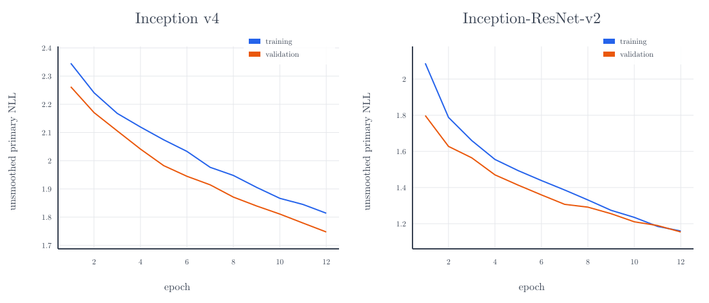
The executed results above report the current selected checkpoint. These fixed small subsets and source budgets do not establish a ranking of architectures. Assess training, validation and test NLL together with the complete held-out confusion. Augmented or batch-moment training objectives and saved-state inference can differ; weak or below-chance outcomes remain part of the result. The independent geometry, parameter-count and derivative checks establish separate implementation claims.
Native confusion matrices
These matrices use the held-out predictions from the executed program above.
The native ConfusionMatrix SVG API labels exact counts with true classes
running from top to bottom and predicted classes from left to right.
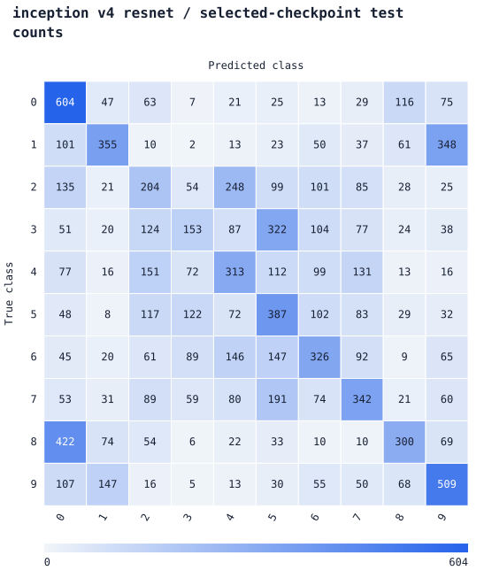
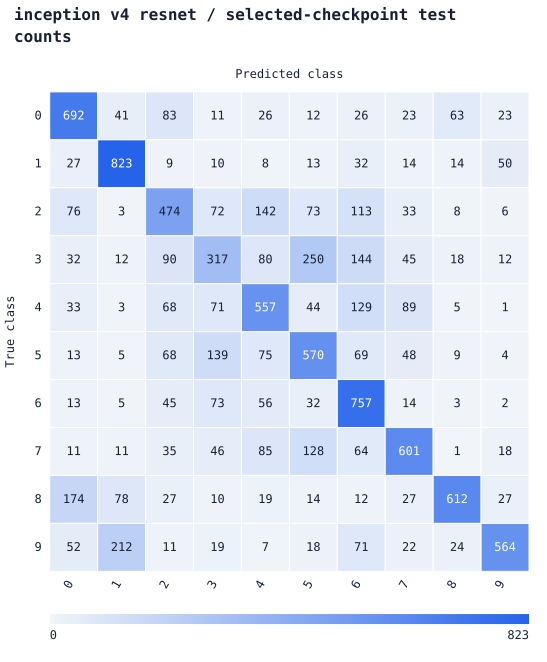
Regenerate every adjacent view
Each alternate architecture or held-out confusion below is copied from this run's local build directory.
#include <filesystem>
int main() {
std::filesystem::create_directories("build");
std::filesystem::copy_file("build/inception_v4_resnet_architecture_resnet.svg", "build/export_inception_v4_resnet_architecture_resnet.svg",
std::filesystem::copy_options::overwrite_existing);
}#include <filesystem>
int main() {
std::filesystem::create_directories("build");
std::filesystem::copy_file("build/inception_v4_resnet_architecture_resnet_graph.svg", "build/export_inception_v4_resnet_architecture_resnet_graph.svg",
std::filesystem::copy_options::overwrite_existing);
}#include <filesystem>
int main() {
std::filesystem::create_directories("build");
std::filesystem::copy_file("build/inception_v4_resnet_architecture_resnet_lenet.svg", "build/export_inception_v4_resnet_architecture_resnet_lenet.svg",
std::filesystem::copy_options::overwrite_existing);
}#include <filesystem>
int main() {
std::filesystem::create_directories("build");
std::filesystem::copy_file("build/inception_v4_resnet_architecture_v4_graph.svg", "build/export_inception_v4_resnet_architecture_v4_graph.svg",
std::filesystem::copy_options::overwrite_existing);
}#include <filesystem>
int main() {
std::filesystem::create_directories("build");
std::filesystem::copy_file("build/inception_v4_resnet_architecture_v4_lenet.svg", "build/export_inception_v4_resnet_architecture_v4_lenet.svg",
std::filesystem::copy_options::overwrite_existing);
}#include <filesystem>
int main() {
std::filesystem::create_directories("build");
std::filesystem::copy_file("build/inception_v4_resnet_confusion_api_0.svg", "build/export_inception_v4_resnet_confusion_api_0.svg",
std::filesystem::copy_options::overwrite_existing);
}#include <filesystem>
int main() {
std::filesystem::create_directories("build");
std::filesystem::copy_file("build/inception_v4_resnet_confusion_api_1.svg", "build/export_inception_v4_resnet_confusion_api_1.svg",
std::filesystem::copy_options::overwrite_existing);
}Conclusion
Scaled residual branches preserve an identity contribution to input derivatives while scaling the learned correction and its parameter derivatives. Full block counts and the final C-block exception remain explicit. The compact CIFAR-10 fits use supervised auxiliary heads and report held-out predictions from their validation-selected checkpoints.
References
- [Szegedy et al. (2017), Inception-v4, Inception-ResNet and the Impact of Residual Connections on Learning](https://arxiv.org/abs/1602.07261).
- [TF-Slim Inception v4](https://github.com/tensorflow/models/blob/master/research/slim/nets/inception_v4.py).
- [TF-Slim Inception-ResNet-v2](https://github.com/tensorflow/models/blob/master/research/slim/nets/inception_resnet_v2.py).
- [CIFAR-10 dataset and binary-file layout](https://www.cs.toronto.edu/~kriz/cifar.html).